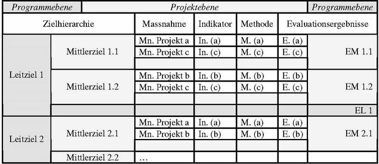

|
|||||||||

Résumé des résultats concernant la réalisation des objectifs
Au moyen d'un système d'objectifs hiérarchisés qui relie les objectifs des projets individuels à ceux du programme, les données de l'évaluation de projet peuvent être rassemblées afin d’obtenir des indications au niveau du programme. Le tableau suivant illustre ceci :

Les projets a, b et c représentent à titre d'exemple une quantité de projets qui ont appliqué certaines mesures (Me.) pour poursuivre un objectif intermédiaire donné contribuant à la réalisation d'un objectif général donné.
La réalisation de l'objectif intermédiaire est indiquée par un indicateur spécifique à chaque projet. Des informations sur son envergure sont obtenues par une méthode spécifique de collecte des données (M.), et on parvient ainsi à un résultat d'évaluation (R.).
Les résultats au niveau des projets pour un objectif intermédiaire peuvent être résumés globalement pour donner des indications sur la mesure dans laquelle les objectifs intermédiaires (OI) ou également les objectifs généraux (OG) ont pu être réalisés globalement.
Cette procédure demande certains travaux préliminaires :
- Une hiérarchie d'objectifs a été développée pour le programme. Vous trouvez plus d'informations à ce sujet à la page hiérarchie des objectifs.
- On sait quel projet poursuit quels objectifs intermédiaires avec quelles mesures et quels sont les indicateurs de la réalisation de ces objectifs. Ces informations peuvent être obtenues par un entretien, présenté au niveau du processus sous le titre"les activités du projet" (voir entretien sur les objectifs et les mesures du projet).
- Les responsables de projet sont informés à temps qu'ils doivent réaliser une évaluation basée sur les objectifs de leurs projets (voir à ce sujet les informations sur l'evaluation basée sur les objectifs au chapitre sur l'évaluation de projets) et quand les données sur la réalisation des objectifs doivent être disponibles.